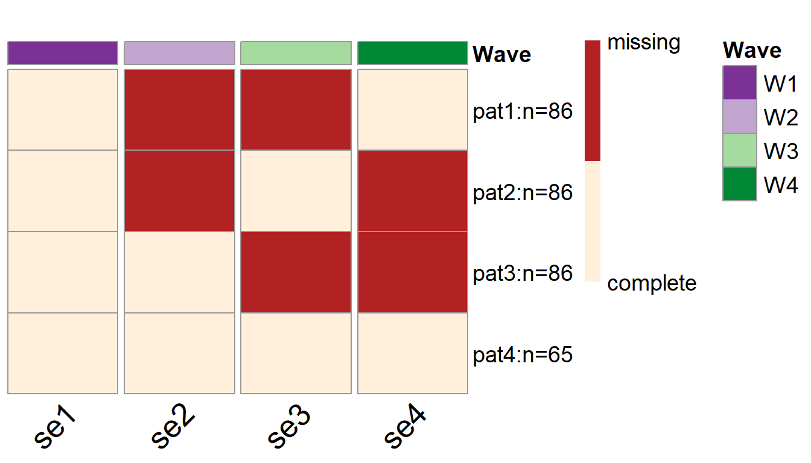

Linear-Latent-Growth-Model.RmdIn this vignette we will demonstrate how to use simPM to search for an optimal PHPM design for a longitudinal research study that employs a linear latent growth model (LGM).
In this hypothetical scenario, a researcher (Dr. X) is interested in studying the longitudinal growth of adolescents’ self-esteem. Dr. X has proposed a longitudinal study that is expected to extend over 4 years. Participants will be assessed on self-report self-esteem annually. The data will be analyzed using a linear LGM, as seen in the following diagram. Because the goal of the study is to examine the typical growth trajectory as well as the inter-individual trajectory variability, the model parameters of focal interest are the mean and variance of both the latent intercept and slope (shown in red).
Very unfortunately, after completing the first wave of data collection, due to various external reasons the sponsor decides to implement a 30% reduction in funding for remaining three waves. Dr. X wishes to continue the study with a new data collection plan. She decides to use simPM to find a design that yields sufficient power but costs no more than the reduced budget.
A linear LGM
simPM searches for an optimal design based on power analysis using Monte Carlo simulations. To implement power analysis, we first need to supply a population data generating model and an analysis model. The easiest way to specify the population model and analysis model is to use the lavaan model syntax. For this linear LGM example, the population model is specified as the follows, assuming Dr. X has made an informed decision about the population model and parameter values based on substantive thoery and past research.
popModel <- '
#----- loadings -----#
i=~1*se1+1*se2+1*se3+1*se4
s=~0*se1+1*se2+2*se3+3*se4
#----- mean structure ----#
se1~0*1
se2~0*1
se3~0*1
se4~0*1
i~2.983*1
s~0.086*1
#---- residual variances ----#
se1~~0.071*se1
se2~~0.034*se2
se3~~0.067*se3
se4~~0.025*se4
#---- variance-covariance strucutre of latent variables ----#
i~~0.268*i+(-0.039)*s
s~~0.023*s
'The analysis model is specified as the same linear LGM with freely estimated model parameters:
analyzeModel <- '
#----- loadings -----#
i=~1*se1+1*se2+1*se3+1*se4
s=~0*se1+1*se2+2*se3+3*se4
#----- mean structure ----#
se1~0*1
se2~0*1
se3~0*1
se4~0*1
i~1
s~1
#---- residual variances ----#
se1~~se1
se2~~se2
se3~~se3
se4~~se4
#---- variance-covariance strucutre of latent variables ----#
i~~i+s
s~~s
'We can use the main function simPM() to search for an optimal wave-level missing design. For simPM() to work properly, we need to supply the relevant information about this longitudinal study. By running the following code, simPM will automatically map out all the possible PHPM designs, run power analysis for each plausible design, and output the optimal design.
wave.ex1=simPM(popModel = popModel, #supply the population model using lavaan language
analyzeModel = analyzeModel, #supply the analysis model using lavaan language
VarNAMES = c("se1","se2","se3","se4"), #the observed variable names
Time = 4, #total number of waves
Time.complete = 1, #number of waves completed before funding cut occurs
k = 1, #number of observed variables collected at each wave
pc = 0.2, #percentage of participants to provide complete data after funding cut
pd = 0, #percentage of participants to provide no data after funding cut
costmx = c(5,10,15), #unit cost of each data point at the following waves
n = 323, #original sample size
nreps = 1000, #number of replications for simulation
focal.param = c("i~1","s~1","i~~i","s~~s"), #specify the focal parameters
complete.wave = NULL, #specify any future wave/variables that need complete data
eval.budget = T, #whether or not there is a budget restriction
rm.budget = 30*323*0.7, #the amount of remaining budget
distal.var = NULL, #specify any distal variables that are not subject to PM
seed = 12345, #random seed
engine = "l", #use lavaan to fit the models
methods = "wave") #type of PHPM designs, "wave" indicates wave-level missingMore specifically:
VarNAMES = c("se1","se2","se3","se4"): The observed variables collected in this study are named se1, se2, se3, and se4.Time = 4: The study has 4 waves of data collection in total.Time.complete = 1: One wave of data collection has been completed before funding cut occurs.k = 1: Only one observed variable is collected at each wave.pc = 0.2: Twenty percent of the participants are assigned to provide complete data for future waves after funding cut.pd = 0: Zero percent of the participants are assigned to drop from the study.costmx = c(5,10,15): The unit cost of one data point is $5 at wave 2, $10 at wave 3, and $15 at wave 4.n = 323: The original sample size planned was 323.nreps = 1000: The program will run 1000 replications for Monte Carlo simulation (for each plausible design).focal.param = c("i~1","s~1","i~~i","s~~s"): The focal parameters of interest are the mean and variance of the latent intercept and slope.complete.wave = NULL: No future waves are by design to have complete data from each participant.eval.budget = T: Yes, there is a budget restriction.rm.budget = 30*323*0.7: After the funding cut, the researcher will have \(\$6,783\) \((=30\times323\times0.7)\) to support the future waves of data collectiondistal.var = NULL: There are no distal variables in the model that are not subject to repeated measures (and thus not considered for PHPM).engine = "l": Model fitted using lavaan.methods = "wave": Search for wave-level missing designs.To view a summary of the results, we can use the summary.simpm() function. It prints out the comparison among all the plausible wave-level missing designs (the comparison is made with regard to the focal parameter who has the lowest empirical power). The function will also print the optimal design that was selected, the details about the focal parameters for the selected optimal design, the missing data pattern for the selected optimal PHPM design, and the proportion as well as the number of participants assigned to each unqie missing data pattern.
For this example, there is only one possible wave-level PHPM design given the budget constraints. Therefore, the program has run simulations only for this one possible design. This design costs $4,530, which is below the reduced available budget.
[1] "=================results summary================"
convergence.rate weakest.param.name weakest.para.power cost.design miss.waves
1 0.92 s~~s 0.999 4530 2
[1] "=================Optimal design================="
convergence.rate weakest.param.name weakest.para.power cost.design miss.waves
1 0.92 s~~s 0.999 4530 2With this design, 20% of the participants are assigned to provide complete data across all the future waves of data collection. The rest 80% of the participants are randomly assigned to one of the three unique missing data patterns (\(n=86\) in each pattern). In the pattern matrix, 1 indicates planned missingness and 0 indicates planned complete data.
[1] "=================Optimal patterns==============="
se1 se2 se3 se4
0 1 1 0
0 1 0 1
0 0 1 1
completers 0 0 0 0
[1] "=================Optimal probs=================="
[1] 0.266667 0.266667 0.266667 0.200000
[1] "=================Optimal ns===================="
[1] 86 86 86 65Over 1000 replications, this design yields an empirical power of 0.999 for testing the slope variance \(\sigma^2_\beta\); the statistical power is 1 for testing the mean intercept (\(\mu_\alpha\)), the mean slope (\(\mu_\beta\)), and the intercept variance (\(\sigma^2_\alpha\)).
[1] "=================Optimal design for focal parameters================="
Estimate Average Estimate SD Average SE Power (Not equal 0) Std Est Std Est SD
i~1 2.98293751 0.031715239 0.031616120 1.000 5.8125191 3.214384e-01
s~1 0.08626832 0.012315538 0.011890850 1.000 0.5821286 1.071983e-01
i~~i 0.26565608 0.028395191 0.027694967 1.000 1.0000000 1.479881e-16
s~~s 0.02275121 0.004702874 0.004540174 0.999 1.0000000 1.476542e-16
Std Ave SE Average Param Average Bias Coverage Average FMI1 SD FMI1
i~1 0.3109336 2.983 -6.248508e-05 0.945 0.06909154 0.02634767
s~1 0.1017555 0.086 2.683187e-04 0.939 0.33360543 0.03811522
i~~i 0.0000000 0.268 -2.343916e-03 0.935 0.25362176 0.04437375
s~~s 0.0000000 0.023 -2.487868e-04 0.939 0.62234904 0.04767489To view more details of the optimal PHPM design, we can use the following code, which will give us more detailed information about the simulation results for this selected PHPM design.
To visualize the missing data patterns of the optimal PHPM design, we can use the plotPM() function. It will plot the missing data pattern matrix so people can have a more intuitive understanding of the optimal design that was selected. In this plot, each row represents a unique missing data pattern. Each column represents an observed variable. The number of participants assigned to each missing data pattern is also labeled.
In this example, we can see that 65 participants are assigned to provide complete data over the future waves of data collection, while the rest of the participants are assigned to one of the three missing data patterns. For instance, there are 86 participants who are randomly picked to NOT provide data in wave 2 and wave 3 (the first row of the plot); Another 86 participants are randomly picked to NOT provide data in wave 2 and wave 4 (the second row of the plot).
